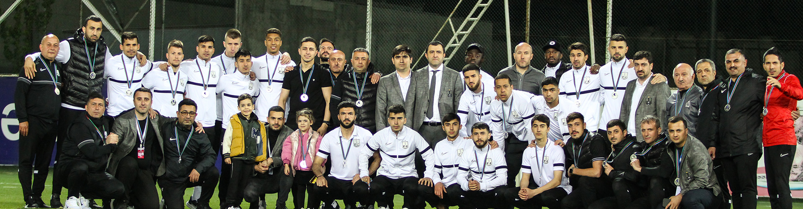

Emin, Eddi və Azər milli komandada
23 may 2022, 17:07
Emin, Eddi və Azər milli komandada
23 may 2022, 17:07
Azərbaycan milli komandasının UEFA Millətlər Liqası çərçivəsində keçirəcəyi oyunlara hazırlıq məqsədilə təlim-məşq toplanışı olacaq. Mayın 24-dən 27-dək Bakıda təşkil olunacaq ilkin təlim-məşq toplanışına “Neftçi” PFK-nın 3 üzvü – Emin Mahmudov, Eddi İsrafilov və Azər Salahlı dəvət alıblar. Toplanışın mayın 29-da başlayacaq növbəti mərhələsində iştirak edəcək heyətlə bağlı əlavə məlumat veriləcək.
Qeyd edək ki, milli komandamız iyunun 3-də səfərdə Qazaxıstan, 6-da səfərdə Belarus, 10-da “Dalğa Arena”da Slovakiya, 13-də isə eyni məkanda Belarusla qarşılaşacaq.

Yusifli və Zülfüqarlı U-21 milli komandasında
22 may 2022, 11:55
21 yaşadək futbolçulardan ibarət Azərbaycan milli komandasının təlim-məşq toplanışı olacaq. Mayın 22-dən 30-dək Bakıda baş tutacaq hazırlıq prosesinə “Neftçi” PFK-nın 2 üzvü – Fərid Yusifli və İsmayıl Zülfüqarlı dəvət ediliblər.

“Neftçi” gümüş medallarla təltif olundu
21 may 2022, 23:13
Premyer Liqanın sonuncu – 28-ci turunun “Qarabağ” – “Neftçi” oyunundan sonra 2021/2022 mövsümünün mükafatlandırma mərasimi keçirilib. Mərasimdə “Neftçi” gümüş medallarla təltif olunub. Medalları “Neftçi” rəsmilərinə və komandamızın üzvlərinə AFFA-nın prezidenti Rövnəq Abdullayev, PFL-in prezidenti Ramin Musayev və AFFA-nın baş katibi Sərxan Hacıyev təqdim ediblər.